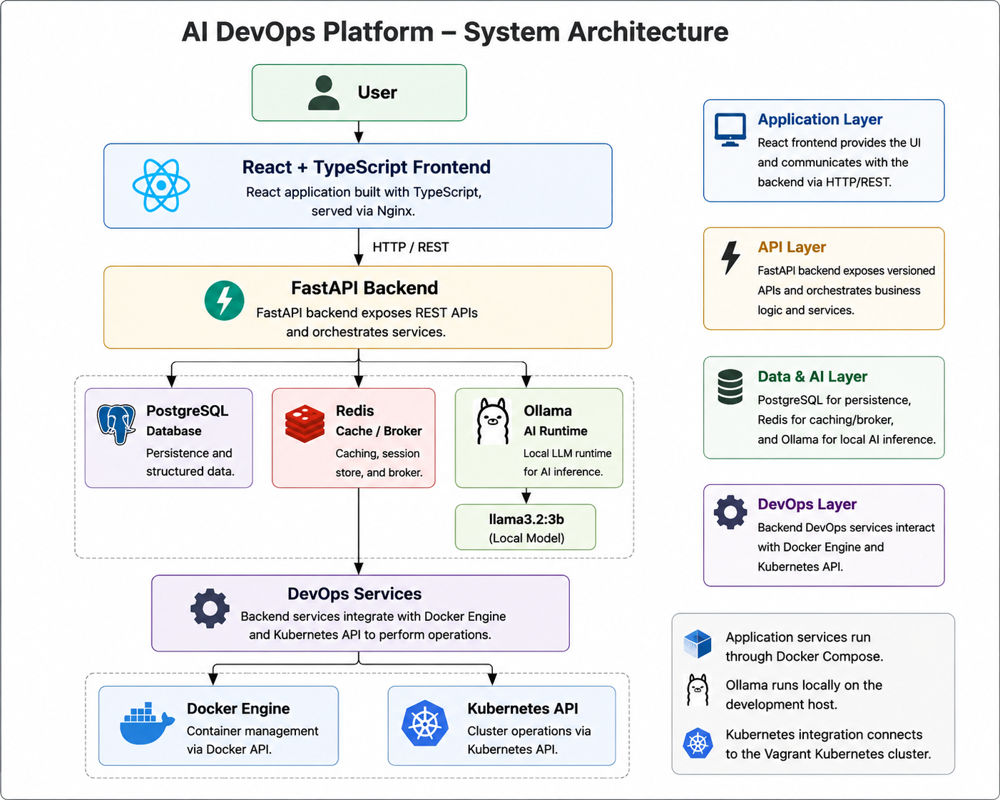
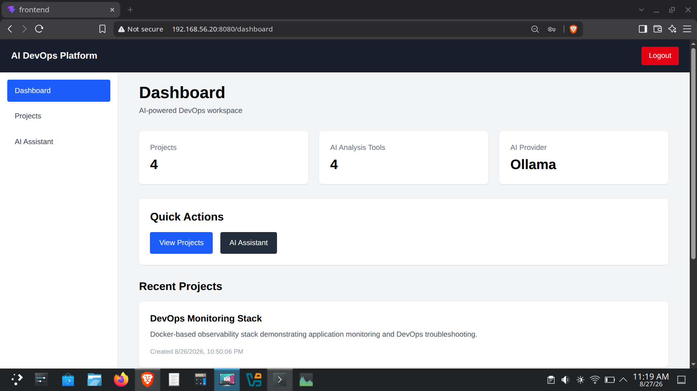
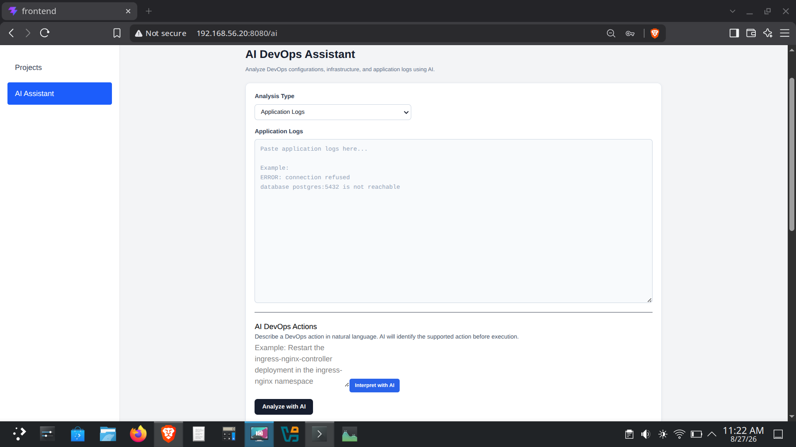
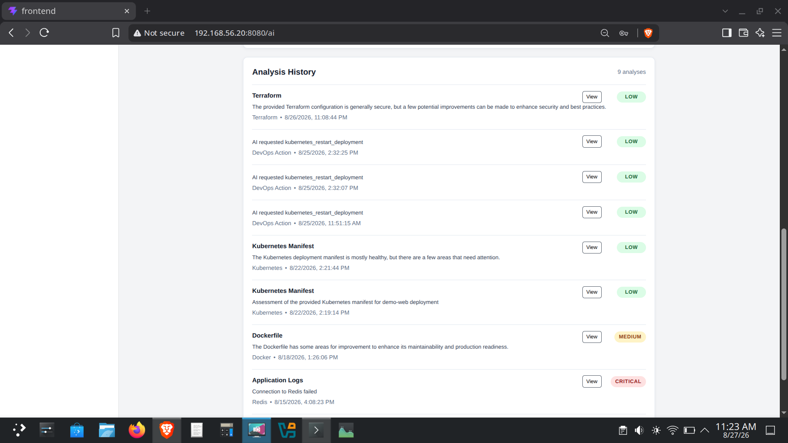
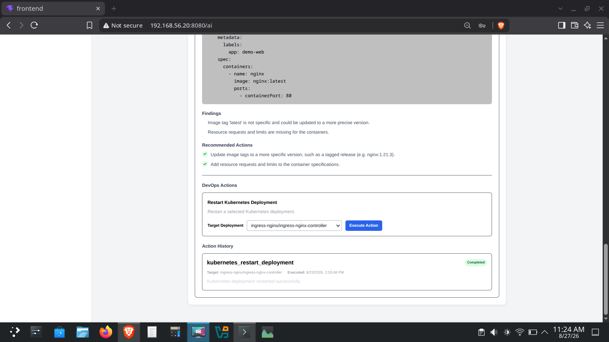

AI-powered DevOps operations platform built with FastAPI, React, Kubernetes, PostgreSQL, Redis, and Ollama for intelligent log analysis, Kubernetes inspection, natural-language DevOps actions, and controlled operational automation.

This project demonstrates an AI-assisted DevOps platform designed to bring intelligent operational capabilities into a unified DevOps workflow. Instead of relying entirely on manual Kubernetes commands and log inspection, the platform provides a web interface where operational information can be inspected and DevOps actions can be initiated through natural-language requests. The platform combines a FastAPI backend, React frontend, Kubernetes integration, PostgreSQL persistence, Redis, and a locally hosted Ollama LLM. AI capabilities are focused on practical DevOps workflows including application log analysis and interpretation of natural-language operational requests. The platform can inspect Kubernetes cluster resources such as nodes, pods, and deployments, while controlled DevOps actions can be executed through the platform and recorded in persistent action history. This provides a practical demonstration of how AI can be integrated with existing DevOps tooling without replacing established infrastructure and operational controls.

AI DevOps Dashboard

AI Assistant

AI Analysis History

AI Action Intent